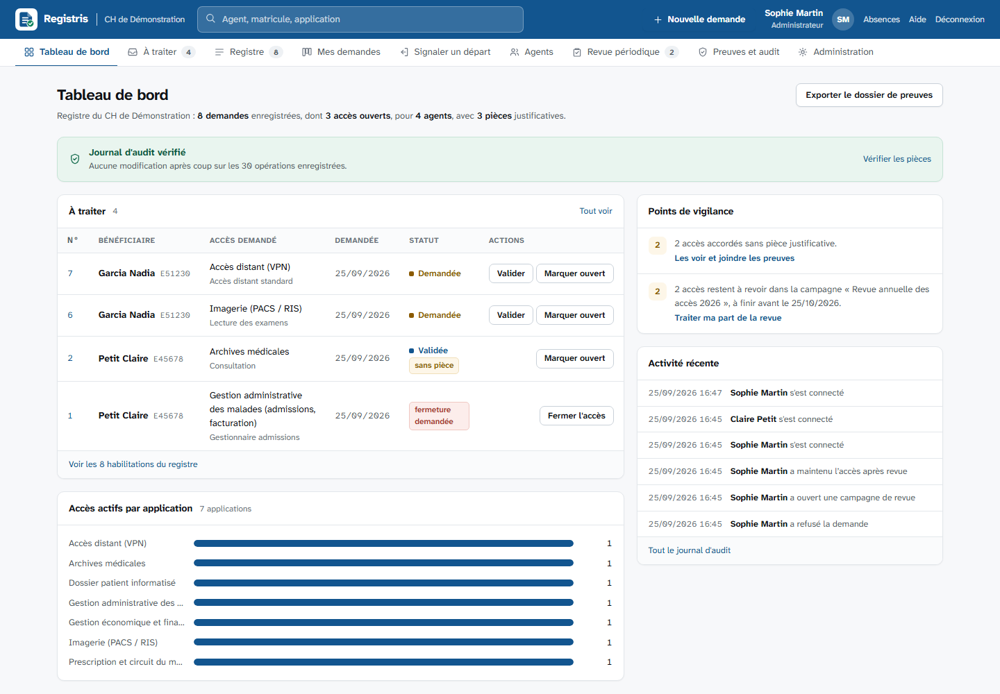
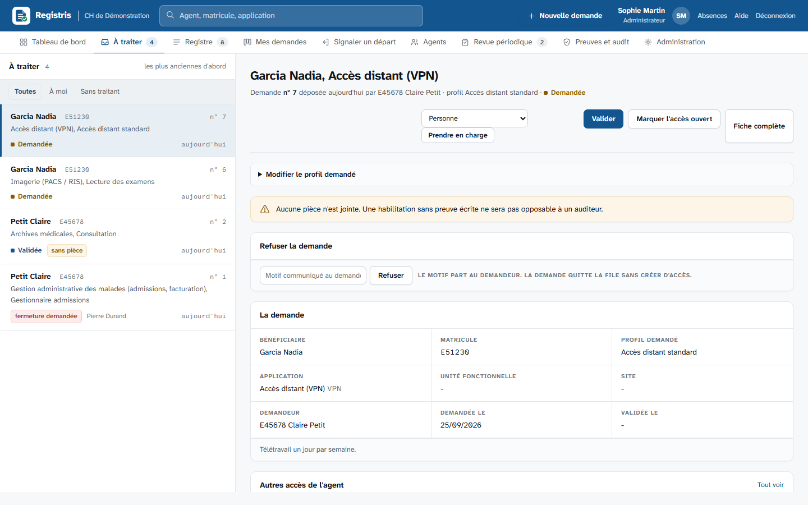
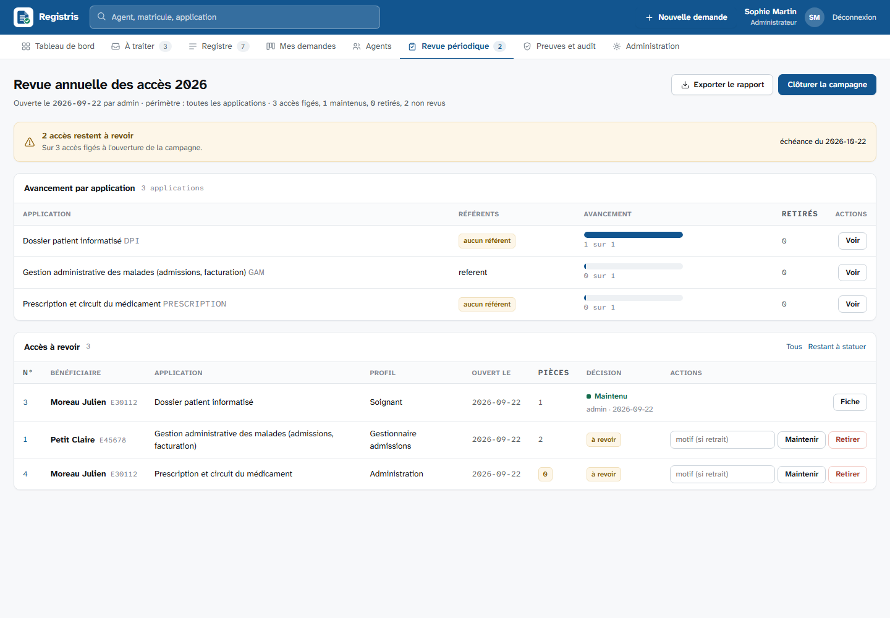

Établissements publics de santé
Registre des habilitations et coffre à preuves d'audit
Lors d'un contrôle, commissaires aux comptes, contrôle interne ou PGSSI-S, il faut prouver, matricule par matricule, qui a obtenu quel accès, sur quel logiciel, sur quelles unités fonctionnelles, quand, à la demande de qui, et sur la base de quelle pièce. Aujourd'hui la réponse est dispersée dans des mois de courriels et de tableurs.
Registris en fait un registre unique, avec les pièces attachées et un journal qui ne se retouche pas en silence. L'auditeur transmet sa liste de matricules, le dossier de preuves complet sort en un clic.
- Licence EUPL-1.2
- Node.js et SQLite, aucun service externe
- Active Directory ou comptes locaux
- Windows Server, Linux ou Docker
- Installateur sans accès à internet

Ce que fait l'outil
Demandes tracées
Catalogue d'applications, demande pour soi ou pour un collègue, demande multiple, packs « nouvel arrivant », pièce jointe dans le même geste.
Cycle de vie opposable
Demandée, validée, exécutée, révoquée, refusée. Chaque transition porte une date et un acteur ; les référents n'agissent que sur leurs applications.
Coffre à preuves
Courriels (.msg, .eml), captures, PDF. Chaque pièce est empreintée en SHA-256 au dépôt ; son intégrité se vérifie à tout moment.
Boîte de traitement
La file à gauche, le dossier complet à droite. On valide, on exécute, on refuse, on joint les pièces sans changer de page, et le manque de preuve est signalé avant le bouton.
Fermetures mesurées
Un cadre signale un départ ou demande la fermeture d'un accès ; l'accès reste ouvert tant qu'un référent ne l'a pas fermé, et le délai entre les deux se mesure.
Revue périodique
Une campagne fige les accès actifs, chaque référent statue sur ses applications, et le rapport final dit aussi ce qui n'a jamais été revu.
Rapprochement
L'extraction des comptes d'un logiciel confrontée au registre : cinq constats, du révoqué encore présent au compte non déclaré, chaque écart soldé et tracé.
Indicateurs de délai
Du dépôt à l'ouverture, du signalement à la fermeture réelle, par application, en médiane et « neuf sur dix en moins de », avec les volumes mensuels.
Dossier de preuves
On colle les matricules échantillonnés, on obtient un ZIP horodaté : synthèse imprimable, tableau CSV, manifeste des empreintes, pièces classées par matricule.
Journal chaîné et ancré
Chaque écriture scelle la précédente par son empreinte ; la tête de chaîne est déposée chaque jour hors de la base. Une retouche ou un remplacement de la base se voit.
Deux écrans de travail


Pour la DSI
| Prérequis | Node.js 22 ou plus récent, et rien d'autre : SQLite est intégré, aucun compilateur, aucune base de données à installer. L'archive de release contient les dépendances : le serveur n'a besoin ni d'internet ni de npm. Ou Docker, sans Node.js. |
|---|---|
| Authentification | Active Directory par LDAPS, rôles déduits des groupes, groupes imbriqués en option, compte local de secours accepté seulement quand l'annuaire est injoignable. Ou comptes locaux. |
| Données | Un fichier SQLite et un dossier de pièces sur le disque local. Sauvegarde et restauration en une commande, avec manifeste d'empreintes. Aucune donnée patient. |
| Exposition | HTTPS direct avec un certificat PEM ou PFX de votre PKI (auto-signé à défaut), ou HTTP local derrière le reverse-proxy de l'établissement. Aucun appel sortant : polices, scripts et images sont servis par l'application. |
| Exploitation | Service Windows ou service systemd durci, configuration hors du dossier de l'application pour des mises à jour sans retouche, sonde /sante pour la supervision, sauvegarde et ancrage planifiés. |
| Livraison | Chaque release publie l'archive, ses sommes SHA-256, une nomenclature logicielle CycloneDX et l'image Docker, construites et testées par l'intégration continue. |
| Notifications | Relais SMTP interne, facultatif. Relances des demandes en attente par une tâche planifiée. |
| Sécurité | Politique de sécurité de contenu avec nonce, jeton anti-CSRF, sessions en base, blocage après cinq échecs, pièces validées par signature binaire, exports CSV neutralisés, journal chaîné. |
| Accessibilité | Contrôles automatiques sur toutes les pages à chaque exécution des tests, documentation de ce qui est vérifié et de ce qui ne l'est pas, modèle de déclaration à compléter par l'établissement. |
| Licence | EUPL-1.2, compatible avec la politique logiciels libres de l'État. Six dépendances, aucune native. |
Ce que l'outil ne fait pas
Il ne crée pas les comptes dans vos logiciels métier : il trace les décisions et conserve les preuves, l'exécution technique reste dans les mains de la DSI.
Il ne remplace pas un outil de gestion des incidents ou du parc. Il se concentre sur la gouvernance des accès et la preuve, et ce périmètre étroit est une décision de conception.
Installer sur un serveur
Tout part de la dernière release : une archive .zip ou .tar.gz qui contient l'application avec ses dépendances, les installateurs et la documentation. Choisissez la voie qui correspond à votre serveur.
Windows Server
installer.cmdNode.js 22 installé, archive décompressée, un clic droit « exécuter en tant qu'administrateur ». L'installateur crée le service Windows, le certificat, le compte administrateur et la règle de pare-feu.
installation\windows\installer.cmd
Relancé sur une nouvelle archive, il met à jour sans toucher à la configuration ni aux données.
Guide WindowsLinux avec systemd
installer.shUn service durci sous un utilisateur dédié, un certificat auto-signé ou le vôtre, et une minuterie qui sauvegarde, ancre, relance et vérifie chaque nuit.
tar -xzf registris-0.3.0.tar.gz cd registris-0.3.0 sudo installation/linux/installer.sh \ --etablissement "CH de Ville"Guide Linux
Docker ou Proxmox
docker composeUne image sans privilège, les données dans un volume, une sonde de santé. Le fichier Compose fourni sert de point de départ.
docker compose up -d docker compose exec registris \ node src/cli.js utilisateur \ admin admin "Administrateur"Fichier Compose
Chaque release fournit un fichier SHA256SUMS pour vérifier l'archive avant installation, et une nomenclature logicielle CycloneDX pour l'inventaire des dépendances. L'image est publiée sous ghcr.io/quentincazier/registris. Tout est détaillé dans le guide d'installation.
Essayer sur un poste
Pour découvrir l'outil avec des données fictives, le dépôt et Node.js suffisent.
# Node.js 22 ou plus récent git clone https://github.com/QuentinCazier/Registris.git cd Registris npm install npm run demo # base de démonstration, données fictives npm start # http://127.0.0.1:3000
| Identifiant | Rôle | Ce qu'il peut faire |
|---|---|---|
| admin | Administrateur | tout, y compris le catalogue et les comptes |
| referent | Référent | valider, exécuter, fermer sur ses applications |
| controleur | Contrôleur | lire, vérifier, produire le dossier de preuves |
| agent | Utilisateur | déposer des demandes, joindre des pièces |
Documentation
- READMEce que fait l'outil, ce qu'il ne fait pas, architecture, sécurité.
- Installationarchive de release, installateur Windows, script Linux, Docker, mises à jour.
- Déploiementreverse-proxy HTTPS, Active Directory, certificat, compte de secours, SMTP, sauvegardes, tâches à planifier.
- Pendant un auditce que demandent les auditeurs, ce que fournit l'outil, comment préparer l'établissement.
- Accessibilitéce qui est vérifié, ce qui ne l'est pas, modèle de déclaration.
- Sécuritémesures en place, choix assumés, revue de la version, signalement d'une faille.
- Releasesarchives à télécharger, sommes SHA-256, nomenclature logicielle, notes de version.
- Journal des versionsce qui change d'une version à l'autre.